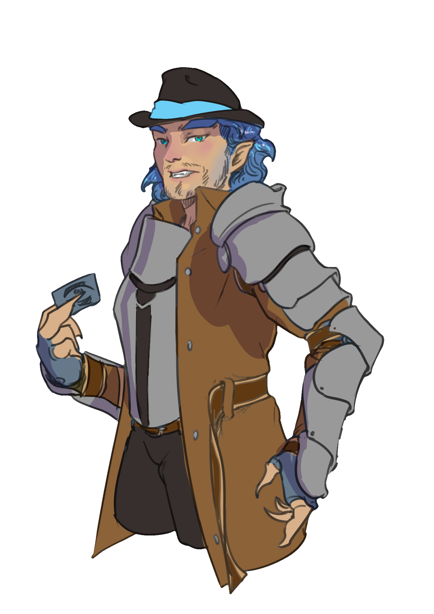

No results found.
Welcome to Check20, a tabletop RPG set in the roaring 1920s, blending high fantasy with the era's charm. The game focuses on worldbuilding, fast-paced combat, and deep in-world relationships. It values player creativity and group consensus over rigid rules. Survival is key - not all battles are meant to be fought. Downtime is crucial, especially for roles like merchants. The game balances combat with social interactions, where NPCs offer rich stories and potential quests.
Narrator
Your role is to create the game world, challenge players, and bring the story to life. Encourage player interaction and questions, and reward their achievements with points for character development. Flexibility and adaptation to player actions are key for a dynamic and enjoyable game.
Players are Characters
Bring your character to life and collaborate with the group towards shared goals. Understand your character's abilities and be proactive in story progression. Think creatively and communicate effectively with the group for a rich, immersive experience.
How To Play
Gather a group of friends who enjoy building stories together. You can play online using Roll20, or go full classic with pencils and paper. A game system exists to give structure - rules that create challenges and focus. Having mechanics gives you tension, consequences, and those big triumphant moments that feel earned.
Once you have gathered your people, they will make characters while you prepare the world. Listen to what they choose and shape the story around them. If someone is a tank, think of intense fights and a big boss battle. If someone is a mage, maybe there is a rival spellcaster or a magic school down the street.
Players choose a Class, then a Path and Talent for that Class. Before or after that they pick a Species. Your world determines whether species are high fantasy or low fantasy. In high fantasy, everyone might be wildly unique creatures. In low fantasy, everyone is basically human with one cool feature.
In this game, dice are used to see what happens when you try something risky, with the d20 doing most of the heavy lifting. In most situations, a roll of 15 or higher is considered a success. When you roll, you add a relevant stat called a Check to your result. That total lands on a tier ranging from Failure up to Success +++, with higher successes unlocking stronger effects, extra damage, or bonus advantages.

There are several types of interactions that players may engage in during the game:
- Relationships involve players interacting with characters from their own backstory or new characters introduced by the narrator. Creatures and NPCs may have basic or complex needs that players can exploit to gain something in return.
- Mysteries and problems are presented by the narrator for the players to solve. These can range from missing children, bounties, or haunted houses. Exploring the world allows players to discover new areas and build relationships with local businesses or guilds.
- Combat in this system is brutal, and players should be prepared for tough engagements. Consider conditions and locking out creatures from being able to act, rather than relying solely on hit points.
- Character Death is a potential outcome of combat. However, death is not necessarily the end of play. The group may consider seeking revival through a temple priest or hospital doctor, or continue with a new character.
- Downtime allows characters to recover from battle and tend to their equipment. Repairing armor, interacting with blacksmiths, and other downtime activities can lead to further connections and quests within the city.
Physical Checks
| Agility | Speed, reflexes, initiative +Wounds · Movement 30ft base, +5ft per 2 pts |
| Crafting | Make, repair, tinker |
| Stealth | Hide, shadow, blend in |
| Strength | Force, grapple, endure +Wounds · Bulk limit = Strength |
| Survival | Navigate, forage, outlast Hold breath: 3 rounds + 1 per Survival point |
Mental Checks
| Influence | Persuade, deceive, perform |
| Intellect | Magic, research, knowledge |
| Luck | Probability, timing, chance |
| Observation | Perceive, investigate, read Low-light vision: 30ft base, +5ft per 2 pts |
| Spirit | Mystic link, wordless magic +1 Max Mana per 2 pts |
Wounds = Agility + Strength (min 1)
Roll Outcomes
| Total | Result | Provoke |
|---|---|---|
| 1–4 | Fail + | Adv |
| 5–9 | Fail | Yes |
| 10–14 | Minor Fail | Disadv |
| 15–19 | Success | - |
| 20–24 | Success + | - |
| 25–29 | Success ++ | - |
| 30–34 | Success +++ | - |
Quick Rules
- Advantage
- Roll two d20s. The first one has +4, then roll another one normal. Take the higher result.
- Disadvantage
- Roll two d20s. The first one has -4, then roll another one normal. Take the lower result.
- Locked Out
- If you have double disadvantage, you cannot attempt the action at all.
- Opposed Check
- Both sides roll d20 + their check. Higher total wins.
- Provoke
- When you miss an attack, or leave an enemy's melee range without using Disengage, they get a free counterattack.
- Group Check
- The group needs one success per player. Great rolls from one person can carry the rest.
- Critical Success
- The best possible outcome - double damage, extra effect, or major narrative win.
- Critical Failure
- Something goes wrong - weapon slips, spell backfires, or a complication is introduced.
- Damage Order
- Damage hits Armor first. Only when Armor is gone does it reduce Wounds.
- No Roll Needed
- If a character could reasonably do it without risk, they just do it - no dice.
Path Progression
At every Path Progression Step gain one of the following:
- +1 to any check (max 15)
- +1 Mana
- +1 Class Resource
Loyalty measures individual trust and bonds, and reflects a character's reputation within factions or guilds. Positive deeds like completing quests or offering gifts enhance loyalty, while negative actions such as betrayal diminish it.
- Individual Loyalty: Loyalty between characters.
- Group Reputation: A character's standing with factions or guilds changes based on their actions, affecting interactions and opportunities.
Loyalty is tracked on a scale from −6 to +6, starting at 0 (Neutral). Points shift through meaningful actions - gifts, betrayals, quest outcomes, and reputation within factions.
| Score | Standing | Description |
|---|---|---|
| −6 | Hostile | Attack on sight or active opposition. |
| −3 | Suspicious | Guarded and unhelpful. Likely to report or obstruct. |
| −1 | Wary | Cool and cautious. Will not extend trust without proof. |
| 0 | Neutral | No particular benefits or penalties. A blank slate. |
| +1 | Friendly | Minor favors, access to some information or restricted areas. |
| +3 | Loyal | Moderate favors, reliable assistance, and shared resources. |
| +6 | Devoted | Complete trust. Will take personal risk on the character's behalf. |
Character Health
Character health pivots from traditional hit points to a system of armor and wounds. Damage hits armor first, then wounds. Zero wounds result in the Injured Condition and further damage risks the Death condition.
- Armor acts as your first defense, absorbing damage until depleted, then requires repairs.
- Wounds track minor injuries, healed by rest or medical aid. Wound capacity is the sum of Agility and Strength checks.
- Healing replenishes wounds up to the character's maximum, not affecting armor or directly curing conditions.
Combat Mechanics
- Finisher: Eliminate a helpless foe in one strike. Cannot be used on an active or aware opponent.
- Targeting: To attack, you must see, hear, or otherwise detect your target.
- Cover: Half cover = disadvantage to hit. Full cover = cannot be targeted.
- Stealth: Take an action to make a Stealth check. If successful, you are unseen and your next attack has Advantage. Attacking or spellcasting ends Stealth.
- Surprise Turns: When attacking from stealth, you gain one extra action.
- Called Shots: Declare before attacking, accept −10 to hit, and if successful, inflict conditions like Bleeding, Broken, or Blind instead of normal damage.
Turn Structure
- Move: Utilize your speed and terrain to reposition. Movement can be split before and after your action.
- Action: The primary activity you perform. Generally one per turn.
- Half-Actions: Smaller actions that can be doubled up in place of a full action.
- Off-Action: Can be used to attack on your turn or react off your turn to a missed attack.
- Free-Action: Minor tasks or communication that don't consume your action economy.
Combat proceeds in turn-based rounds. Strategy aims to incapacitate opponents - either through strategic disadvantage or elimination. Consideration for peaceful resolutions or stealth approaches can enrich the roleplaying experience.
Morale checks for enemies can dictate their willingness to fight, with living beings more likely to flee than undead. Turn order is determined by an initiative roll (d20 + Agility). Actions can be delayed for strategic timing within one's turn.
Range
| Range Type | Distance |
|---|---|
| Melee | 5ft or touching |
| Reach | 10ft |
| Short | Within 50ft |
| Medium | 50–200ft |
| Long | 200–1000ft |
| Visible | Within line of sight |
Press On
After a combat encounter, characters can "Press On" to regain 1 class resource, 1 Mana, repair armor for [[1d6]] + Crafting, heal for [[1d6]] + Survival, and remove all conditions lasting 1 minute or less. This option can be used twice per day, but not consecutively without engaging in another combat.
Long Rest
A long rest requires 10 hours of uninterrupted downtime, fully restoring all wounds, recharging class resources, repairing all armor to at least half, and removing any conditions that last one day or less. Characters can only take a long rest once per day and must be in a safe environment.
In combat, movement is a separate type of action from attacking or using items. During any turn you can move any amount of your movement speed at any point during your turn. For example, if you have 30ft of movement, you can move 10ft, attack, then move 20ft away. However, if you engage a creature and then retreat, they may have an opportunity to attack using their Off-Action.
Fern-Tuft (ft): In this rulebook, "ft" does not stand for "feet" but for "fern-tuft," a unit of measure slightly smaller than the traditional foot. For ease, simply use "ferns" in gameplay.
Types of Movement
- Difficult Terrain: Requires twice as much movement - every 5ft becomes 10ft.
- Jumping: Jump 5ft from a standstill plus your Strength, or twice that with a running start.
- Climbing: Strength check to move up to half your movement speed per turn. Failures result in falling; make an Agility check to save yourself.
- Swimming: Swim at half your movement speed. Heavy armor causes sinking.
- Prone: Melee attackers gain advantage, ranged attackers gain disadvantage. Standing up costs 15ft of movement.
- Moving Past Creatures: Move through a creature's space only if they are two sizes smaller (Tiny) or larger (Massive), or if they are allies.
- Falling: Take 5 bludgeoning damage per 10ft fallen. Falls that bring you to the Injured Condition cause the Death Condition instead.
- Extreme Conditions: Hazardous environments like lava or acid cause 10 damage per round.
- Burrowing: Burrowing creatures are immune to sight-based spells and non-piercing weapons.
- Teleport: Special creatures can teleport to another unoccupied space without provoking.
Actions
Actions take only a few seconds to complete and represent your primary turn activity.
- Attack: Make a melee or ranged attack against a creature or object within range.
- Unarmed Strike: Deals 1 BPorS damage and can be taken as an Off-Action.
- Dash: Move again after moving, doubling your distance.
- Grab or Hold: Make an opposed Strength check to impose the Pinned Condition.
- Administer a Potion: Give a potion to a downed ally. Drinking a potion yourself is a Half-Action.
- Stealth: Make a Stealth check. If successful, you are unseen and your next attack has Advantage.
- Cast a Spell: Requires sound, movement, and a spellcasting check (usually Spirit).
Half-Actions
Half-Actions consume half of your action economy - two can be used in place of one full action.
- Disarm: Make an opposed Strength or Agility check to disarm a creature.
- Help: Give a creature +1 to a check.
- Pick up an Item: Picking up an item is a Half-Action.
- Use an Object: Interact with objects like levers or buttons.
- Disengage: Move out of a creature's range without provoking opportunity attacks.
- Drink Something: Drinking a potion or handing one off to an adjacent ally.
Stances (Half-Action)
Choose a stance to remain in until your next turn.
- Advantage Stance: Gain advantage on your next attack.
- Disadvantage Stance: Give disadvantage to enemies attacking you or allies in range.
- Offensive Stance: Use your Off-Action to Provoke.
- Reaction Stance: React to failed attacks against you.
Off-Actions
Off-Actions don't require an Action or Half-Action and can be performed off your turn.
- Reaction: A special action taken out of turn, like an opportunity attack.
- Provoke: Attack creatures leaving your melee range without disengaging, or when they fail a check against you.
- Disrupt: Impose disadvantage on an enemy's attack with a successful check.
- Block: Reduce melee damage by half using a shield.
- Demoralize: Force enemies to make a morale check with an Influence (Intimidate) roll.
Non-Actions
Non-Actions don't consume any part of your action economy but may be limited by the narrator.
- Switch Weapons: Drop a weapon and draw another.
- Stress Push: Take 4 stress damage to gain a +3 bonus on a low roll.
- Roleplay: Briefly communicate or give orders without consequence.
Size
Size determines how a creature interacts with its environment and other beings, affecting reach, stealth, strength, and vulnerability.
- Tiny: Less than 1ft - Insects, pixies, pocket watches, frogs, canary birds.
- Small: 1–4ft - Gnomes, Klienkin, wild cats, goblins, garden statues.
- Medium: 5–7ft - Humans, Beastfolk, trench-coated detectives, coffins, altar tables.
- Large: 8–15ft - Ogres, dire bears, cars and trucks, golem enforcers, dockside cranes.
- Giant: 15–25ft - Clockwork titans, building-sized automatons, airship mooring frames.
- Monolithic: 25–100ft - Skyscraper façades, war zeppelins, tower golems, dirigible hangars.
- Environmental: Over 100ft - Floating citadels, mountain elementals, world-tree, sleeping colossi.
Gender
In the realm of Shek, gender is as varied as the landscapes that stretch from soaring peaks to deep mystical forests. Here, identity is not just male or female but also includes the enigmatic dragon. Dragons, with their ancient magic, can fluidly shift to align with the souls of those they cherish. The changelings too, with their transformative abilities, are not bound by any single form.
In Shek, it's a gentle reminder for all: never assume, for identity is a personal journey, unique as the being who walks its path.

Bulk represents the weight and space your gear occupies - not just weight, but also size and how cumbersome an item is. A watch has 0 Bulk because it can be worn and forgotten about. Meanwhile, an empty barrel may be light but is awkward to carry, giving it a Bulk of 5.
Bulk Classifications
| Bulk | Description | Examples |
|---|---|---|
| 0 | Small/wearable | Watch, ring, eyeglasses |
| 1 | Backpack-sized | Clothes, flask, small tools |
| 5 | Large items | Armor, barrel, large pot |
| 10 | Heavy items | Furniture, small canoe |
| 15 | Very heavy | Piano, cart |
| 20 | Extremely heavy | Small car, heavy safe |
Bulk Penalties
- Bulk exceeds Strength: Over-encumbered (Pinned condition).
- Bulk > 2× Strength: Over-encumbered + Exhausted condition.
- Worn items: No bulk.
- Bundles: Reduce the average bulk of items.
- Backpacks: Reduce total bulk carried.
Mundane Storage
| Storage | Description | Reduction |
|---|---|---|
| Utility Pouch | Small, rugged pouch worn on a belt. For tools, trinkets, or coins. | −1 Bulk |
| Craftsman's Satchel | Compact cross-body satchel with multiple compartments. | −3 Bulk |
| Traveler's Backpack | Durable backpack with reinforced compartments for essential gear. | −5 Bulk |
Dimensional Storage
| Storage | Capacity | Living Creatures |
|---|---|---|
| Ring Safe | 1 item, up to 1 bulk | Not allowed |
| Nomad Pouch | Up to 10 bulk (≤2 each) | Tiny, up to 1 hour |
| Small Bag of Storage | Up to 50 bulk (≤5 each) | Up to 2 bulk, 8 hours |
| Deep Pack | 200 bulk | Up to 10 bulk, 24 hours |
| Storage Vault | Up to 1,000 bulk | Any size with air |
| Portable Sanctuary | Unlimited | Unlimited |
Downtime represents the time between adventures - recovery, trade, research, and the slow work of building toward something. Unlike rest, downtime plays out over days or weeks and unlocks activities that aren't possible in the middle of a session.
Roll 1d8 on the relevant table below to determine the outcome of a downtime activity.
Fishing / Hunting / Crafting
| Roll | Outcome |
|---|---|
| 1 | Catch nothing. |
| 2–3 | Small catch; minor materials. |
| 4–5 | Moderate; usable in crafting. |
| 6–7 | Rare find; worth [[2d10]] gold. |
| 8 | Exotic or legendary material. |
Street Hustling
| Roll | Outcome |
|---|---|
| 1 | You're cheated. Lose [[1d6]] gold. |
| 2–3 | Break even, but draw suspicion. |
| 4–5 | Make [[1d10]] gold. |
| 6–7 | Win big: [[2d10]] gold and a contact. |
| 8 | Win a rare item or favor, but someone wants it back. |
Research / Investigation
| Roll | Outcome |
|---|---|
| 1 | False lead; waste of time. |
| 2–3 | Uncover a rumor or half-truth. |
| 4–5 | Gain real insight, +1 to a relevant check this week. |
| 6–7 | Reveal hidden history, secret, or weak point. |
| 8 | Discover a hidden location or major story clue. |
Networking / Schmoozing
| Roll | Outcome |
|---|---|
| 1 | Offend someone important. −1 Loyalty with a faction. |
| 2–3 | Gain a forgettable contact. |
| 4–5 | Secure a favor or inside tip. |
| 6–7 | Gain +1 Loyalty with a faction or group. |
| 8 | Gain a powerful ally or blackmail material. |